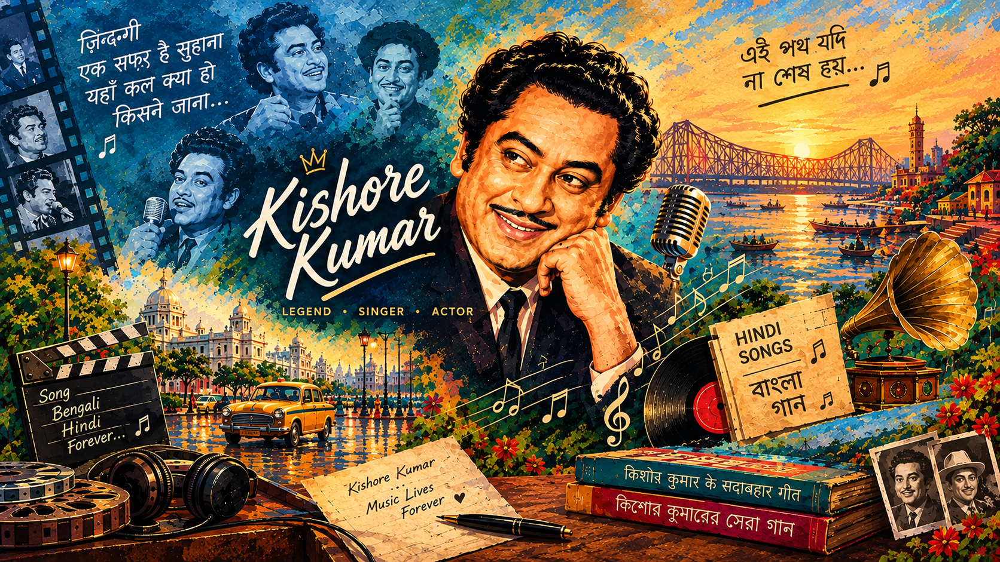

--:--
KISHOREVERSE
🎵 Hindi ↗
🎵 Bengali ↗
Show Video
Change image
Show Video
Load Hindi
Load Bengali
Reset image
Load
Kishore Kumar · Music Lives Forever
YouTube Music · Ads controlled by YouTube
×
GitHub
×
▶ Show video